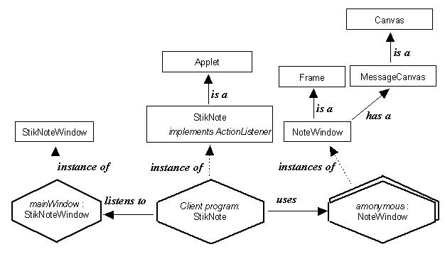

The StikNote application - Instance diagram

The client program is an instance of the StikNote
class and uses a single instance of the StikNoteWindow
class, which it listens to. It creates multiple instances of the
StikNoteNote class which
extends the Fame class, in order
to have an independent top level window, and contains an instance
of the MessageCanvas class
which extends the Canvas class.